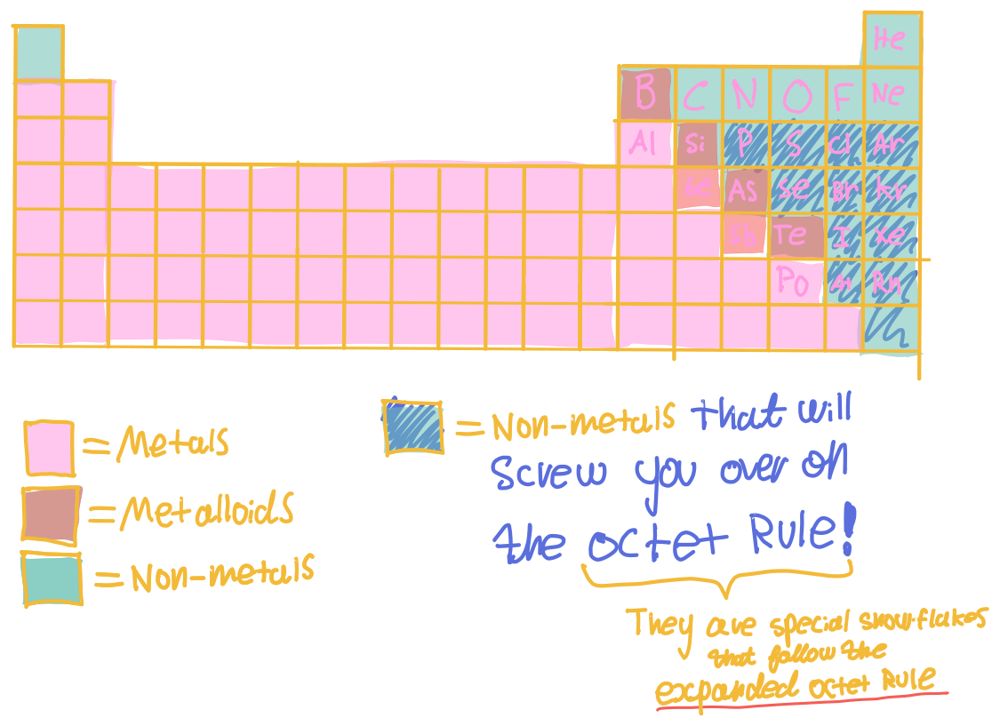

Periodic Properties of the Elements
Note, electron affinity is not the same as electronegativity!
Terms
- Isoelectronic
- Atoms with the same number of electrons.
- Ionization energy
- Predict Metallic Character Based on Periodic Trends
Expanded Octet (Exceptions to the Octet Rule)
All non-metals from period 3 to period 8 of the Periodic Table, can have expanded octets.
